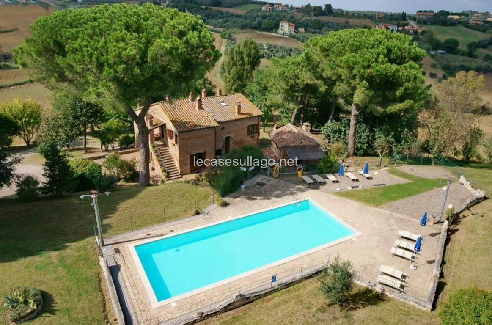

€980.000
Castiglione del Lago · Umbria · Italy
Panoramic 18th-century Castiglione del Lago casale with wooden beams, cotto floors and five independent apartments around a built 12×6 private pool on ~5.7 ha of olives and farmland — deep Trasimeno agriturismo character under the €1.2M cap.
Opened 14 Sep 2026 on Le Case sul Lago; asking €980.000; ~572 m² main casale + 89 m² dependance; ~100 productive olives; habitable now. Fact box lists 8 bed / 8 bath across the units.
Open listing